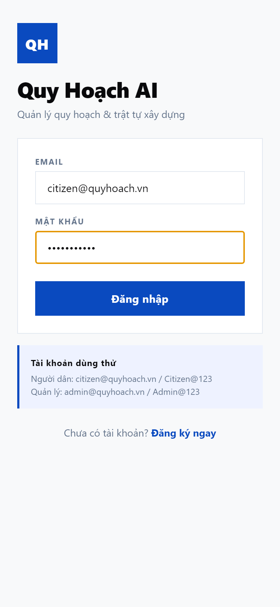
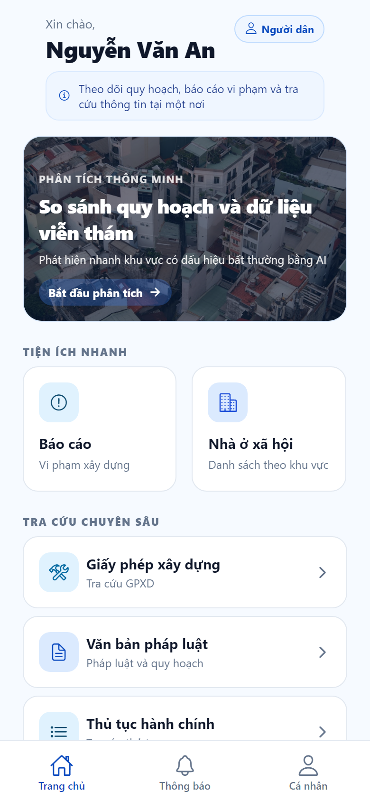
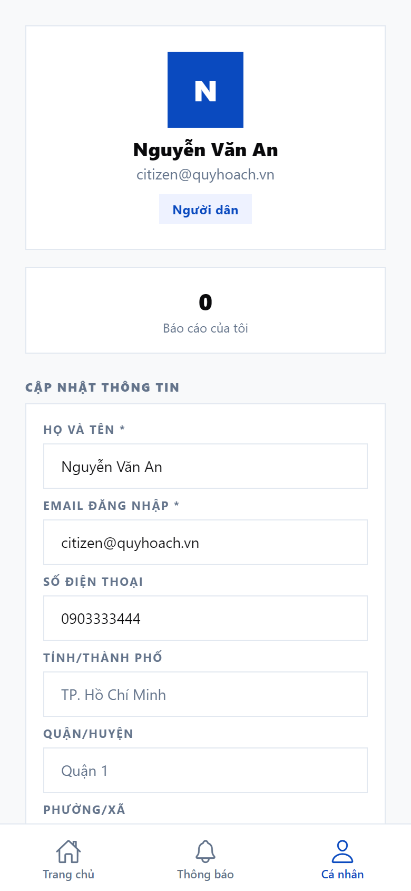
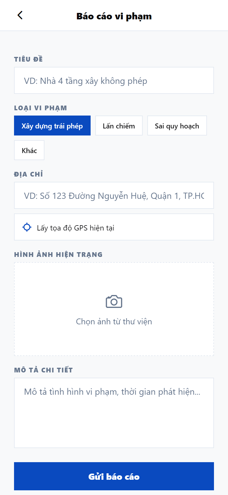
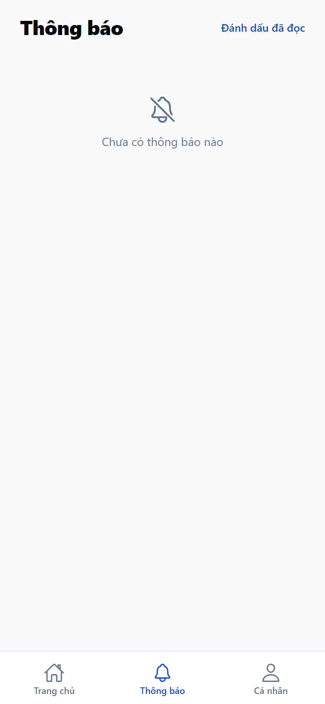
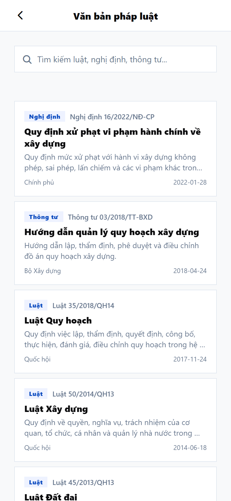
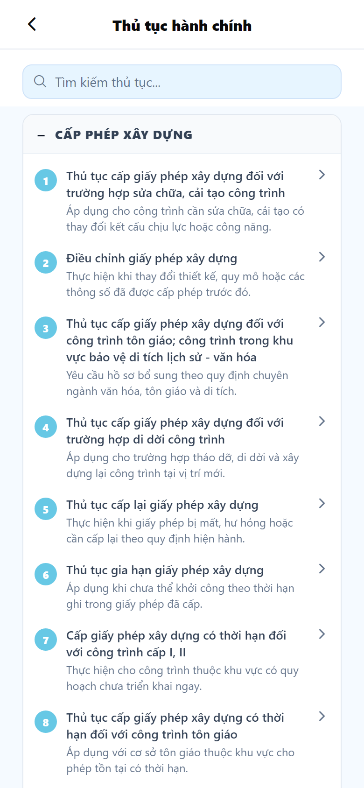
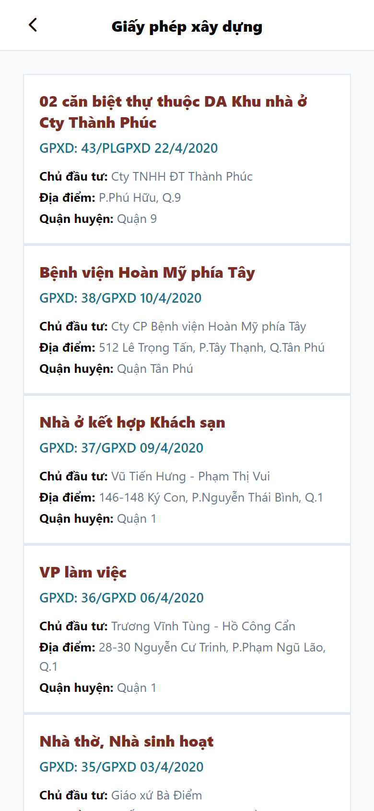
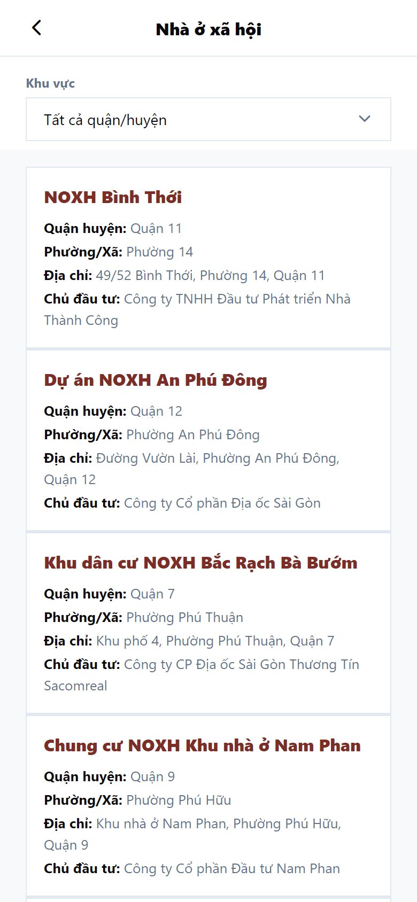

Đường vào: Mở app hoặc https://quyhoach-citizen.vercel.app → màn Đăng nhập.

Hình 1.1 — Đăng nhập (app công dân)
Nhập EMAIL và MẬT KHẨU.
Nhấn Đăng nhập → vào Trang chủ.
Trên màn hình có mục Tài khoản dùng thử: Người dân citizen@quyhoach.vn / Citizen@123.
Thiếu thông tin → cảnh báo Thiếu thông tin. Sai thông tin → Đăng nhập thất bại. Chưa có tài khoản → Chưa có tài khoản? Đăng ký ngay.
1.2. Đăng ký tài khoản Người dân
Họ và tên, Email (bắt buộc); Số điện thoại (tùy chọn).
Mật khẩu tối thiểu 6 ký tự.
Nhấn Đăng ký → hệ thống gán vai trò Người dân (không có mục chọn vai trò) và đăng nhập tự động vào Trang chủ. Huy hiệu hiển thị Người dân.
Mật khẩu dưới 6 ký tự → Mật khẩu yếu. Tài khoản Người thực hiện / Admin do cán bộ tạo trên web Admin (mục Người dùng) hoặc seed — không tự đăng ký trên app.
1.3. Trang chủ
Điểm xuất phát tới tiện ích và báo cáo của bạn.

Hình 1.3 — Trang chủ
Khu vực
Nội dung
Đi tới
Lời chào
Tên + huy hiệu Người dân
—
Tiện ích nhanh
Báo cáo; Nhà ở xã hội
Các màn tương ứng
Tra cứu chuyên sâu
Giấy phép xây dựng; Văn bản pháp luật; Thủ tục hành chính
Các màn tương ứng
Báo cáo của tôi
Tối đa 5 báo cáo gần nhất
Chi tiết báo cáo
Kéo xuống để làm mới. Trống: Chưa có báo cáo nào.
Người dân không thấy mục QUẢN TRỊ / Trung tâm Quản trị. Mục đó chỉ hiện với tài khoản quản lý.
1.4. Cá nhân, đổi mật khẩu, đăng xuất

Hình 1.4 — Cá nhân
Cập nhật: họ tên*, email*, điện thoại, tỉnh / quận / phường / đường → nhấn Lưu thông tin → Đã cập nhật thông tin tài khoản.
Menu
Hành vi
Báo cáo đã gửi
Danh sách báo cáo của bạn
Đổi mật khẩu
Mật khẩu cũ → mật khẩu mới (tối thiểu 6 ký tự)
Cài đặt thông báo / Ngôn ngữ / Quyền riêng tư
Sắp ra mắt
Đăng xuất cần xác nhận. Phiên bản dưới cùng: QuyHoạch AI · v1.0.0.
Quy trình 2 — Báo cáo vi phạm
Gửi phản ánh, theo dõi trạng thái và nhận thông báo khi cán bộ xử lý.
Mục đích Gửi báo cáo tới cơ quan quản lý và xem phản hồi. Người dân không tự đổi trạng thái.
flowchart TD
Home["Trang chủ"] --> Form["Báo cáo vi phạm"]
Form --> Check{"Đủ tiêu đề, mô tả, địa chỉ?"}
Check -->|Không| Thieu["Cảnh báo Thiếu thông tin"]
Thieu --> Form
Check -->|Có| Gui["Gửi báo cáo"]
Gui --> Received["Trạng thái: Tiếp nhận"]
Received --> Mine["Báo cáo của tôi"]
Mine --> Detail["Chi tiết báo cáo"]
Detail --> Wait["Chờ cán bộ xử lý"]
Wait --> Notif["Tab Thông báo"]
Notif --> Detail
Vòng đời trạng thái (người dân chỉ xem, không bấm chuyển):
stateDiagram-v2
[*] --> received: Gui_bao_cao
received --> processing: Can_bo_tiep_nhan
processing --> resolved: Duyet
processing --> rejected: Tu_choi
received --> resolved: Duyet_truc_tiep
received --> rejected: Tu_choi_truc_tiep
2.1. Gửi báo cáo
Đường vào: Trang chủ → Báo cáo.

Hình 2.1 — Gửi báo cáo vi phạm
Tiêu đề (ví dụ: Nhà 4 tầng xây không phép).
Loại: Xây dựng trái phép / Lấn chiếm / Sai quy hoạch / Khác.
Địa chỉ (bắt buộc).
(Tùy chọn) Lấy tọa độ GPS hiện tại; Chọn ảnh từ thư viện.
Mô tả chi tiết → nhấn Gửi báo cáo.
Thành công: Báo cáo đã được gửi đến cơ quan quản lý — trạng thái Tiếp nhận.
Chỉ chọn ảnh từ thư viện (chưa chụp camera trực tiếp). Không chọn vị trí bằng ghim bản đồ — chỉ GPS tùy chọn.
2.2. Chi tiết và theo dõi
Đường vào: Báo cáo của tôi trên trang chủ, menu Báo cáo đã gửi ở tab Cá nhân, hoặc một thông báo liên quan.
Hiển thị: tiêu đề, trạng thái, địa chỉ, thời gian, ảnh, mô tả, PHẢN HỒI TỪ QUẢN LÝ (khi cán bộ đã ghi).
Nhãn trên app
Ý nghĩa
Tiếp nhận
Cơ quan đã nhận
Đang xử lý
Đang được xem xét
Đã duyệt
Đã xử lý / chấp nhận (web gọi là Đã giải quyết)
Từ chối
Không chấp nhận
Người dân không tự đổi trạng thái báo cáo. Chỉ cán bộ (web Admin hoặc app Người thực hiện) mới cập nhật.
2.3. Thông báo

Hình 2.3 — Thông báo
Mở tab Thông báo.
Nhấn một mục → đánh dấu đã đọc; mở báo cáo nếu có liên kết.
Nhấn Đánh dấu đã đọc để đọc tất cả.
Trống: Chưa có thông báo nào.
Hệ thống gửi thông báo khi báo cáo được tiếp nhận và khi cán bộ đổi trạng thái / ghi phản hồi.
Quy trình 3 — Tra cứu thông tin
Tra cứu pháp luật, thủ tục hành chính, giấy phép xây dựng và nhà ở xã hội.
Mục đích Dùng các tiện ích tra cứu trên trang chủ.
flowchart TD
TrangChu["Trang chủ"] --> NOXH["Nhà ở xã hội"]
TrangChu --> GPXD["Giấy phép xây dựng"]
TrangChu --> VBPL["Văn bản pháp luật"]
TrangChu --> TTHC["Thủ tục hành chính"]
3.1. Văn bản pháp luật

Hình 3.1 — Văn bản pháp luật
Trang chủ → Văn bản pháp luật.
Gõ từ khóa tìm kiếm.
Mở văn bản → TÓM TẮT, NỘI DUNG, cơ quan / ngày.
Trống: Không tìm thấy văn bản.
3.2. Thủ tục hành chính

Hình 3.2 — Thủ tục hành chính
Trang chủ → Thủ tục hành chính.
Tìm kiếm; mở nhóm danh mục (+/−).
Xem chi tiết: hồ sơ cần nộp, thời hạn, lệ phí, cơ quan tiếp nhận, căn cứ pháp lý. Trường trống hiện Đang cập nhật.
Trống: Không có thủ tục phù hợp.
3.3. Giấy phép xây dựng

Hình 3.3 — Giấy phép xây dựng
Trang chủ → Giấy phép xây dựng.
Chọn mục → THÔNG TIN GIẤY PHÉP, CHỦ ĐẦU TƯ & ĐỊA ĐIỂM, GHI CHÚ.
Dữ liệu mẫu cố định; chưa tìm kiếm / lọc nâng cao. ID không hợp lệ → Không tìm thấy giấy phép.
3.4. Nhà ở xã hội

Hình 3.4 — Nhà ở xã hội
Trang chủ → Nhà ở xã hội.
Lọc Tất cả quận/huyện hoặc một khu vực.
Xem tên, địa chỉ, chủ đầu tư.
Trống: Không có dự án cho khu vực đã chọn.
Chưa có màn hình chi tiết từng dự án (chỉ danh sách).